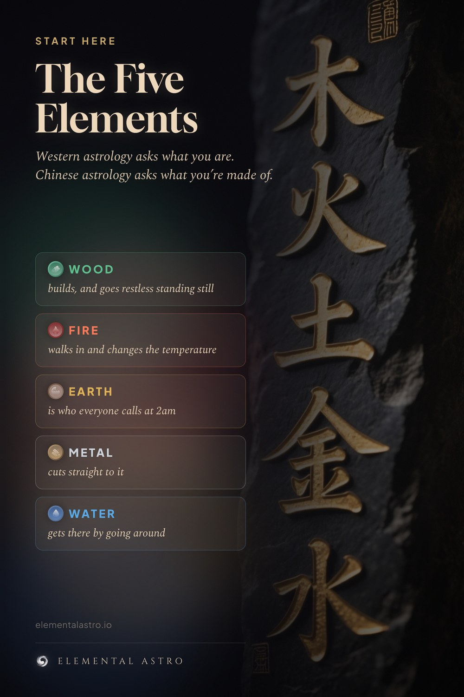

Western astrology asks what you are. Chinese astrology asks what you are made of. Wood builds. Fire moves. Earth holds. Metal cuts. Water finds the way through. Five elements, one system, and it decides everything from your compatibility to your best season. Start here. Five elements explained, Chinese astrology for beginners.
https://www.elementalastro.io/learn/five-elements